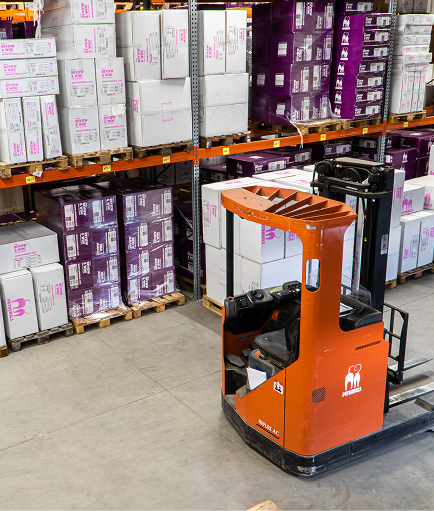

perchè l’ ai può sostituirli:
Il lavoro in magazzino comprende molte attività ripetitive e organizzate secondo procedure precise, come il prelievo dei prodotti dagli scaffali, l’imballaggio delle scatole, l’etichettatura, lo smistamento degli ordini e la gestione dell’inventario. Queste mansioni seguono spesso schemi prevedibili e non richiedono decisioni particolarmente complesse, per questo possono essere automatizzate con facilità attraverso robot, nastri trasportatori intelligenti e software basati sull’intelligenza artificiale.
L’AI permette ai sistemi automatici di riconoscere i prodotti, individuare la loro posizione nel magazzino, controllare le quantità disponibili e organizzare gli ordini in modo rapido ed efficiente. Le macchine possono lavorare con precisione, ridurre gli errori e operare anche 24 ore su 24, senza bisogno di pause. Questo consente alle aziende di velocizzare le consegne, abbassare i costi e rendere più efficiente l’intera catena logistica. Di conseguenza, il ruolo tradizionale degli operai di magazzino potrebbe ridursi o trasformarsi.
